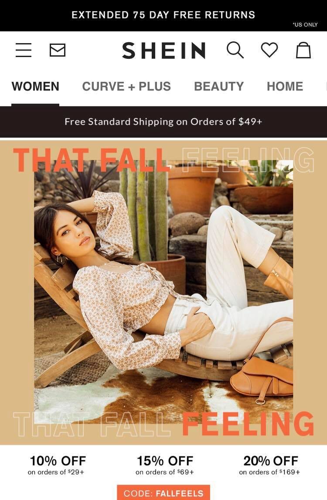
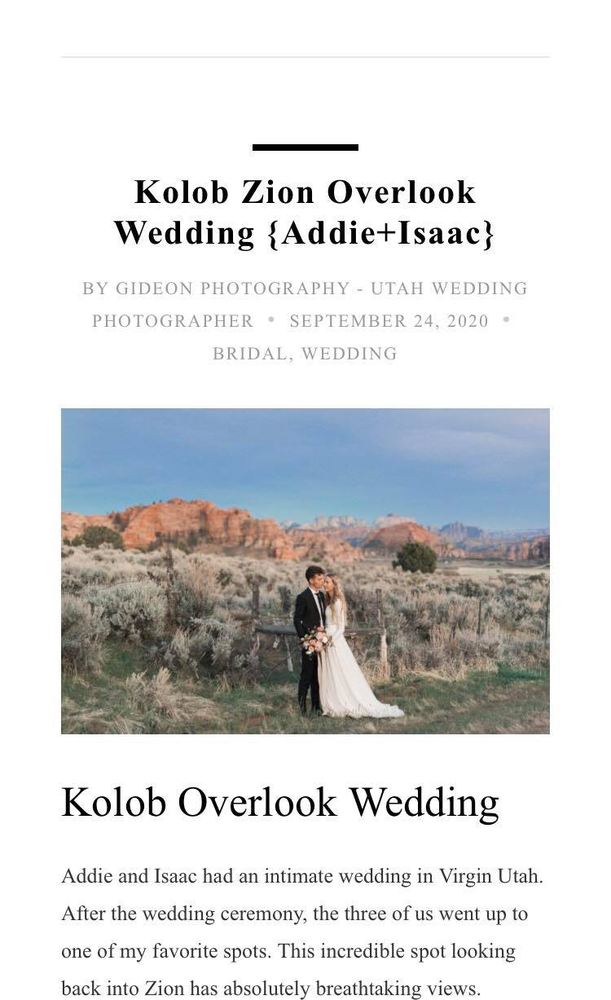

Visual Heirarchy
Shein
US Shein.com  The visual heirarchy of this website is very clear, going from the large photo of clothing to the
statement "That Fall Feeling". Then your attention is directed downwards to the sales going on.
This encourages customers to be looking for clothes they will actually purchase on those sales. Then the
bold text of the logo brings the attention to the top of the page with all of the kinds of clothing
available.
The size of the pictures and text is intentional as to entice customers to spend money right
after they click on the link or an advertisement.
Repetition
Charbeat
Charbeat.com Charbeat provides fancy business analytics to large news companies globally, so their presentation is very important.
They advertise their partnerships with news outlets such as the New York Times and the Washington Post. They have a
dark and complex color scheme and many examples of repetition throughout their design. They have many three part
sections in a dark blue highlight with colorful accents and links to more information elsewhere in the website. The
example above is just one time out of many where they use this strategy to catch the reader's eye.
In this
instance or repetition, these links will lead to to learn about their research, customers, and products by various
authors. This exemplifies the company's range of evidence that they are a sucessful and profitable business.
White Space
Gideon Photography
Gideonphotography.com The white space between the pictures and the text is important because it gives the eye a break from all
of the information as well as making it possible for the reader to really enjoy the photo. As a
photographer, the design of the website is super important for encouraging clients to hire them.
This often includes a lot of visual information. I think this website stands out from the others I looked at
because the text and photos are given so much space and the text is not overwhelming.